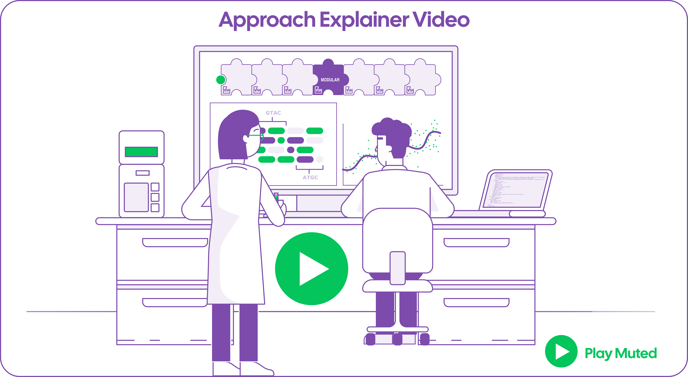
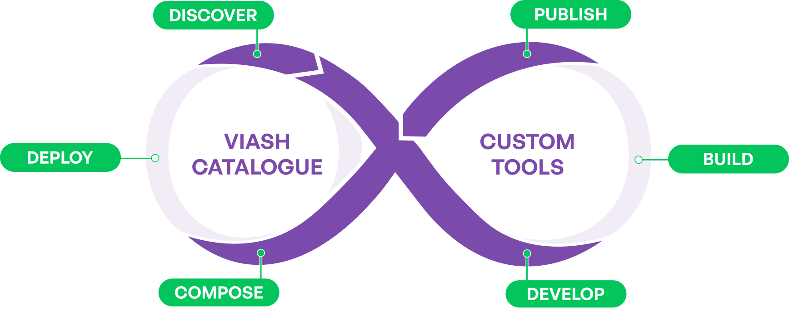
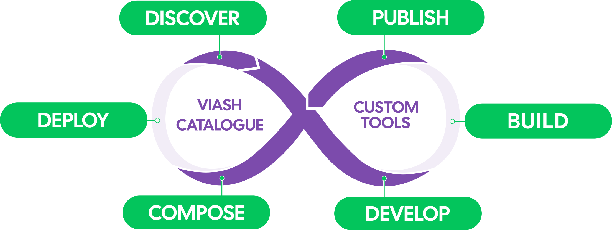
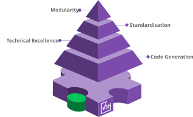

Modular Biotech Research, adaptable Data Workflow, Bioinformatics Innovation, scalability, reproducibility, polyglot, scalable, reproducible
Our approach to data workflow development, powered by the Viash tool and Viash Hub platform, is built on years of experience in data workflow development and a deep understanding of our clients’ needs.
More than just developing functional data workflows, the solution champions a flexible, long-term, and future-proof approach in data processing that is easily integratable into existing environments, moving away from traditional fixed and manually developed data workflow structures.

In biotech, creating robust omics data workflows demands careful navigation of various challenges to ensure reliability and robustness. Below are ten common pitfalls that can undermine success:
For more information on these pitfalls, click here to open our blog post
“10 Common Pitfalls in Omics Data Processing—And How to Avoid Them”


Our Data Workflow Suite consists the Viash Tool, the Viash Hub platform and an extensive repository of biotech data workflows and tools: Viash Catalogue.
The open-source catalogue on Viash Hub offers a comprehensive collection of publicly available biotech data workflows, modules, and useful tools , all ready for individual use or for composing into larger data workflows.
Viash Hub Public is a platform for managing, developing, deploying, and sharing bioinformatics tools
and workflows.
It allows users to publish, share, and maintain versioned modules, ensuring accessibility and
reusability.
Optimised for cloud environments, it simplifies launching data workflows.
Available 2025
Viash is the open-source tool developed by Data Intuitive to create, standardise, and manage data workflows. It automates the generation of modular, executable components, ensuring that workflows are reproducible, scalable, and easily integrated into various computational environments.
Engineered with deep expertise in pipelines and Nextflow, Viash minimizes manual coded boilerplate
coding and development errors, significantly boosting efficiency.
Through the quality framework, each data analysis building block is crafted to meet modularity, standardisation, and technically state-of-the-art best practices.
By generating the modular building blocks based on the predefined specifications, we can ensure a consistently high quality in built data analysis and workflow solutions.
Modularity means biotech data analysis workflows are built up out of self-contained analysis building blocks, each with a specific function and the flexibility to operate independently or be combined into a larger data workflow.
These modular blocks enable efficient maintenance and reuse, improving workflow adaptability.
Standardisation ensures that each modular building block is built according to a predefined structure, promoting consistent quality, compatibility, and ease of use across workflows.
This framework provides a foundation that reduces the learning curve, making it easier for users to adopt and implement the workflows.

Technical excellence ensures operational quality, reliability and optimal performance across all building blocks and technologies used , drawing on the company's years of biotech data analysis and data workflow development expertise.
Each technique is thoroughly documented and tested to create robust, industry-ready data analysis.
The Viash tool takes care of boilerplate code generation to automate the creation of executable workflows based on a user's description and the predefined technical excellence.
This ensures modularity, standardisation, and consistent code quality, while reducing manual coding efforts and preventing development errors.
Transform your data workflows with Data Intuitive’s complete support from start to finish.
Our team can assist with defining requirements, troubleshooting, and maintaining the final product, all while providing end-to-end support.
Contact Us